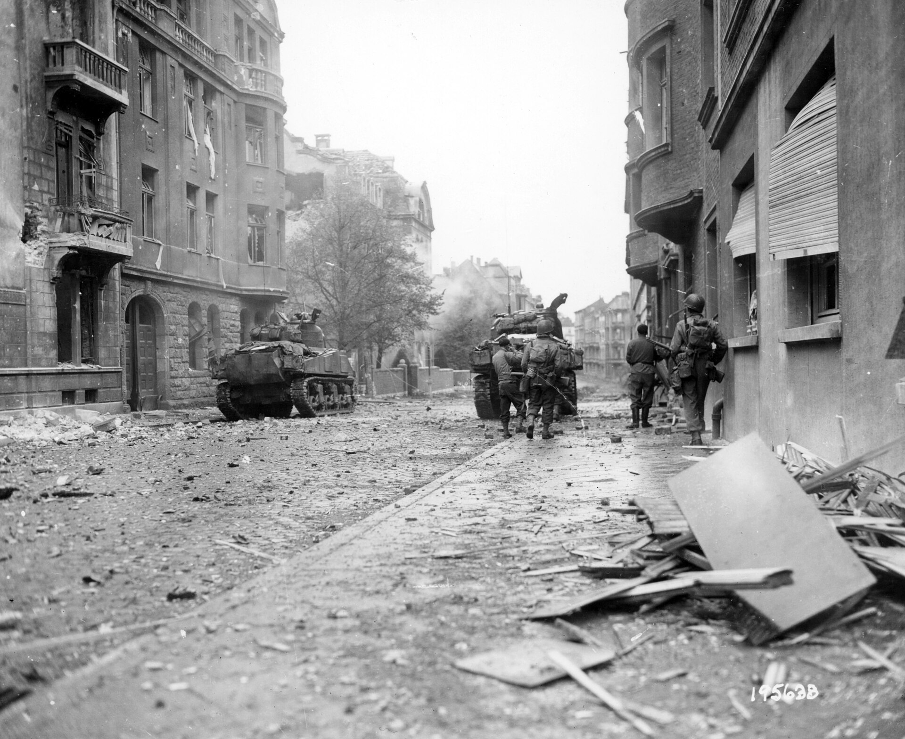
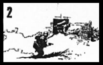
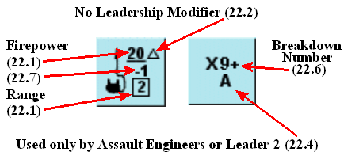

Procedimientos, cuerpo a cuerpo e infantería (reglas 19–27)¶

19. PROCEDIMIENTOS DE MOVIMIENTO Y FUEGO¶
Para captar la naturaleza de «decisión instantánea» del combate de infantería, SQUAD LEADER emplea las siguientes reglas en un intento de crear realismo y suspense. Deben respetarse rigurosamente.
19.1 Siempre que una unidad se mueve a un hex, debe pagar el coste en FM de entrar en ese hex. No se permite al jugador en movimiento devolver la unidad a su punto de partida y empezar de nuevo.
19.2 Siempre que una unidad se mueve y el jugador en movimiento retira la mano de la ficha, esa unidad no puede moverse más.
►19.3 Ningún bando puede hacer comprobaciones de LDV «potenciales» con una regla salvo al resolver el Combate de Fuego durante una de las Fases de Fuego. Tales comprobaciones deben ir precedidas de una declaración de las unidades que disparan. Si la comprobación de LDV revela una LDV bloqueada, las unidades declaradas como disparadoras deben disparar igualmente contra ese hex aunque todos los resultados se ignoren. Esta penalización refleja la escasa probabilidad de causar daños significativos cuando el objetivo solo se vislumbra por un instante. Si hay armas de apoyo implicadas, el ataque debe realizarse igualmente para comprobar posibles averías de las armas.
►19.4 Todas las unidades de infantería se mueven de una en una, salvo que una o varias Escuadras estén aprovechando los FM adicionales obtenidos al moverse con un Líder (5.44), (EXCEPCIÓN: 32.51), en cuyo caso el Líder debe acompañar a la unidad en un apilamiento durante toda la Fase de Movimiento.
20. COMBATE CUERPO A CUERPO¶

Inevitablemente, las armas impersonales y de largo alcance de la guerra moderna deben dejarse a un lado en favor de la bayoneta y la culata del fusil cuando los hombres se enzarzan con su enemigo en el último abrazo mortal. Aquí, de habitación en habitación, la granada reina por encima de la más pesada ametralladora. En tan estrechos confines no se espera ni se da cuartel, y la batalla se prolonga hasta el último aliento.
►20.1 El combate cuerpo a cuerpo es un tipo alternativo de lucha que solo puede ocurrir durante la Fase de combate cuerpo a cuerpo entre unidades enemigas en el mismo hex. No hay modificaciones por terreno a las tiradas de dados del combate cuerpo a cuerpo.
20.2 A diferencia del Combate de Fuego normal, el combate cuerpo a cuerpo se considera simultáneo y ambos bandos disparan sobre el otro, incluso si uno o ambos bandos resultan eliminados por el fuego del adversario.
20.3 En el combate cuerpo a cuerpo, los factores de potencia de fuego de las unidades atacantes se comparan con el factor de potencia de fuego de las unidades enemigas atacadas para obtener una proporción entre la fuerza de ataque y la de defensa, conocida como probabilidades (odds). Por ejemplo, si dos escuadras 6-2-8 atacan a una escuadra 4-6-7, las probabilidades serían 12-4, es decir, 3-1. Las fracciones siempre se redondean a la baja en favor del defensor.
Ejemplo: 6 contra 4 se convertiría en 3-2, 11 contra 4 equivaldría a 2-1, 4 contra 15 equivaldría a 1-4, etc. Una vez determinadas las probabilidades, se consulta la Tabla de combate cuerpo a cuerpo de la Hoja de Datos de Referencia Rápida para determinar el Número de Muerte («Kill Number») de esas probabilidades. Si se obtiene el Número de Muerte o un resultado inferior, las unidades atacadas quedan eliminadas. Los dados deben volver a tirarse para cada ataque de combate cuerpo a cuerpo independiente.
►20.4 Puedes repartir tus ataques de combate cuerpo a cuerpo de la manera que desees, siempre que ninguna unidad ataque más de una vez por Fase de combate cuerpo a cuerpo. Puedes atacar a todas o solo a algunas de las unidades enemigas del hex. Puedes combinar todo tu combate cuerpo a cuerpo en un único ataque o desglosarlo en combates más pequeños. Todos los ataques de combate cuerpo a cuerpo deben designarse antes de realizar cualquier tirada de dados de combate cuerpo a cuerpo.
Ejemplo: Supongamos que ambos jugadores tienen tres escuadras con una potencia de fuego de 4 cada una en el mismo hex. Ambos jugadores podrían repartir su combate de las siguientes maneras: A. Un único gran ataque a 1-1 (12-12) con las 6 unidades, O B. Tres Escuadras contra una a 3-1 (12-4), O C. Tres ataques separados a 1-1 (4-4) contra cada escuadra, O D. Un ataque a 2-1 (8-4) contra una escuadra y un ataque a 1-2 (4–8) contra las otras dos, o un ataque a 1-1 (4-4) contra una de las otras dos.
►20.5 Las LMG son las únicas armas de apoyo que pueden emplearse en el combate cuerpo a cuerpo. Suman a la potencia de fuego de una unidad atacante, pero no se incluyen en la potencia de fuego de una unidad defensora al determinar las probabilidades del combate cuerpo a cuerpo. Las LMG no tienen factor de penetración cuando se emplean en combate cuerpo a cuerpo.
►20.6 El modificador de liderazgo de cada Líder en el mismo hex puede aplicarse a una tirada de dados de combate cuerpo a cuerpo predesignada por turno de jugador.
20.7 No pueden realizarse ataques de combate cuerpo a cuerpo contra un Líder a menos que el Líder comenzara la Fase como la única unidad enemiga en el hex.
20.71 Si al final de la Fase de combate cuerpo a cuerpo todas las escuadras amigas que comenzaron la fase en el hex resultan eliminadas, entonces cualquier unidad de Líder en el hex queda eliminada también.
►20.72 A un Líder que comienza la Fase de combate cuerpo a cuerpo solo en un hex con unidades enemigas se le otorga una potencia de fuego nominal de ataque y una fuerza de defensa de 1. El Líder no puede usar a la vez su potencia de fuego nominal y manejar una LMG, pero su modificador de liderazgo sí afecta a su tirada de dados de Ataque de combate cuerpo a cuerpo.
►20.8 Si tras ejecutar todos los ataques de combate cuerpo a cuerpo permanecen en el hex unidades de ambos bandos, dichas unidades quedan «trabadas en melé» y no pueden abandonar el hex hasta que uno u otro bando haya sido completamente eliminado.
►20.81 Las unidades trabadas en melé no pueden disparar fuera del hex durante ninguna Fase de Fuego posterior, ni realizar ninguna otra actividad que no sea el combate cuerpo a cuerpo.
20.82 Pueden introducirse nuevas unidades en el hex de melé, dentro de los límites de apilamiento, durante su Fase de Avance.
►20.83 El hex de melé puede recibir fuego mediante Combate de Fuego desde unidades situadas fuera del hex, pero dicho fuego afecta por igual a unidades amigas y enemigas.
20.84 Mientras exista una melé en un hex, no pueden capturarse armas de apoyo en ese hex.
►20.9 Las unidades desmoralizadas no desempeñan papel alguno en el combate cuerpo a cuerpo. Si una de ellas apareciera en un hex de melé, queda eliminada.
21. PREPARATIVOS PARA EL JUEGO¶
21.1 Consulta el Escenario que vas a jugar y dispón las secciones de tablero indicadas según la configuración requerida en el diagrama de Configuración del Tablero.
21.2 Consulta la Tabla de Registro de Turnos del escenario para determinar qué bando se despliega primero y, a continuación, destroquela las fichas de unidad necesarias y colócalas sobre el tablero dentro de las zonas indicadas por el escenario.
21.3 Revisa la tarjeta del escenario para determinar si hay alguna Regla Especial aplicable a ese escenario.
¡ALTO! Ya has leído todo lo necesario para jugar el escenario inicial: "The Guards Counterattack" (El contraataque de la Guardia). Juégalo varias veces para familiarizarte con las sutilezas del combate de infantería básico de SQUAD LEADER antes de avanzar hacia los escenarios más complejos que siguen.
22. LANZALLAMAS¶
22.1 Los lanzallamas tienen un alcance de 2 hexes y una potencia de fuego de 20. Los lanzallamas no tienen alcance largo y no reciben modificadores de potencia de fuego por Fuego a Bocajarro; siempre atacan con 20 factores de potencia de fuego, salvo que el objetivo esté oculto, en cuyo caso se reduce a la mitad según lo dispuesto para el fuego de ÁREA.
22.2 Los ataques de lanzallamas se resuelven en la Tabla de Fuego de Infantería (TFI), pero no reciben modificadores a la tirada de dados de ningún tipo, incluidos los que normalmente se aplican por terreno, fuego defensivo contra infantería en movimiento, humo y/o liderazgo.
22.3 Los lanzallamas nunca pueden combinar su fuego con otras unidades, ni siquiera con otros lanzallamas.
22.4 Solo los Ingenieros de Asalto (8-3-8) o los líderes con un modificador de liderazgo de -2 o -3 pueden operar un lanzallamas, y no pueden disparar otras armas de apoyo mientras lo hacen.
22.5 Una escuadra puede utilizar su potencia de fuego inherente en la misma fase de fuego durante la cual utiliza su lanzallamas. Sin embargo, la escuadra debe disparar contra el mismo objetivo que el lanzallamas, aunque el lanzallamas debe utilizar una tirada de dados distinta para su ataque. La tirada del lanzallamas debe lanzarse antes de la tirada de la potencia de fuego de armas ligeras inherente de la escuadra.
22.6 Si la tirada de dados de cualquier Combate de Fuego de un lanzallamas es 9 o más, se considera que se ha quedado sin combustible y se retira del juego una vez resuelto ese Combate de Fuego.
►22.7 Siempre que un lanzallamas ocupe un hex objetivo, el Grupo de Fuego que ataque al hex objetivo del lanzallamas obtiene un modificador de fuego adicional de -1 a la tirada de dados del ataque.
22.8 A diferencia de otras armas, los ataques de lanzallamas no se reducen a la mitad durante la Fase de Fuego de Avance, incluso si la unidad atacante se movió durante la Fase de Movimiento.
22.9 Siempre que un lanzallamas obtenga un resultado KIA en la Tabla de Fuego de Infantería, todas las armas de apoyo del hex objetivo quedan eliminadas también.


Etiquetas (en sentido horario): - No Leadership Modifier (22.2) → Sin modificador de liderazgo (22.2) - Breakdown Number (22.6) → Número de avería (22.6) - Firepower (22.1) (22.7) → Potencia de Fuego (22.1) (22.7) - Range (22.1) → Alcance (22.1) - Used only by Assault Engineers or Leader-2 (22.4) → Usado solo por ingenieros de asalto o Líder-2 (22.4)

Etiquetas: - Firepower (23.1) → Potencia de Fuego (23.1) - (23.5) → (23.5) - (23.3) → (23.3) - Place / Mov Ph / Explode / AdvFire (23.4) → Colocar / Fase de movimiento / Explota / Fuego de avance (23.4)
23. CARGAS DE DEMOLICIÓN¶
23.1 Una carga de demolición se considera un Arma de Apoyo y explota en el hex objetivo con una fuerza equivalente a 30 factores en la Tabla de Fuego de Infantería.
23.2 Solo las Escuadras de Ingenieros de Asalto (8-3-8) o los líderes con un modificador de liderazgo de -2 o -3 pueden colocar una Carga de Demolición.
►23.3 Las Cargas de Demolición pueden colocarse en el hex objetivo desde cualquier hex adyacente alcanzado por el ingeniero o el líder que porta la carga. (EXCEPCIÓN: las cargas de demolición no pueden colocarse desde una elevación inferior a una superior a través de un lado de hex de acantilado (44.1).) La carga debe colocarse en el hex objetivo durante la Fase de Movimiento del jugador propietario. La unidad que coloca la carga no necesita permanecer adyacente al hex objetivo. Para que quede operativamente colocada, la Escuadra de Ingenieros o el líder que colocó la carga debe sobrevivir a todo el Fuego Defensivo enemigo contra el hex de colocación sin desmoralizarse. Si se desmoraliza en el hex de colocación, la Carga de Demolición permanece en el hex de colocación de la unidad desmoralizada y no explota.
23.4 Si está correctamente colocada, la carga explotará en cualquier momento durante la siguiente Fase de Fuego de Avance, a elección del propietario, y se retira del juego.
23.5 Se utilizan todos los modificadores a la tirada de dados por cobertura protectora, como el +3 por un edificio de piedra. Los modificadores de liderazgo no afectan a la tirada de dados de la carga al explotar. Las unidades ocultas (25.2) se atacan a media potencia (15 factores de potencia de fuego).
23.6 Una Escuadra de Ingenieros de Asalto puede utilizar su potencia de fuego inherente en la misma Fase de Avance durante la cual explota su Carga de Demolición, pero la escuadra debe disparar contra el hex objetivo que contiene la Carga de Demolición colocada.
23.7 Siempre que una Carga de Demolición obtenga un resultado KIA en la Tabla de Fuego de Infantería, todas las armas de apoyo del hex objetivo quedan eliminadas también.
23.8 Las cargas de demolición, como todas las armas de apoyo, fallan con una tirada de dados de efectos de 12.
24. HUMO¶

24.1 Los marcadores de humo no son armas de apoyo, sino que sirven para reducir la visibilidad en el hex en el que se colocan. Por ello, los marcadores de humo no se "transportan" por el tablero, sino que permanecen apilados fuera del tablero en la cantidad especificada por el escenario, para usarse a voluntad.
24.2 Solo las Escuadras de Ingenieros de Asalto pueden colocar marcadores de humo. Cada Escuadra puede colocar un marcador de humo por turno.
►24.3 El humo puede colocarse en cualquier hex ocupado por una Escuadra de Ingenieros o adyacente a ella, como primera acción realizada durante la Fase de Fuego Preparado del propietario. La unidad de Ingenieros que coloca el humo puede aún moverse y/o disparar normalmente.
24.4 Los marcadores de humo no cuentan para los límites de apilamiento.
24.5 Las unidades pueden moverse hacia o a través de un hex lleno de humo tras pagar una penalización adicional de 1 FM.
►24.6 Cualquier Grupo de Fuego que trace una LDV hacia dentro, hacia fuera o a través de un hex lleno de humo sufre un modificador de + a la tirada del Combate de Fuego (tirada PARA IMPACTAR de cañones pesados, 33.3). Este modificador es igual a la tirada de un dado. El humo no tiene efecto sobre la resolución de los ataques de Carga de Demolición, lanzallamas o Artillería (46.5).
24.7 La tirada del modificador de humo se realiza después de la tirada del Combate de Fuego de cada Grupo de Fuego y afecta únicamente al fuego de ese Grupo de Fuego.
24.8 Una vez jugado, un marcador de humo permanece en su sitio hasta el inicio de la siguiente Fase de Fuego Preparado del jugador que lo colocó, momento en el que se retira.
25. OCULTACIÓN¶
No existe el movimiento oculto como tal en el Set de Juego I de SQUAD LEADER. Todas las piezas permanecen a la vista sobre el tablero en todo momento. Sin embargo, colocando marcadores de Ocultación encima de una o varias unidades, se crea cierta dosis de incertidumbre y de "niebla de guerra".
25.1 Un marcador de Ocultación no se considera arma de apoyo y no cuenta para los límites de apilamiento.
25.2 Una unidad o pila de unidades situada bajo un marcador de ocultación no puede ser inspeccionada por el jugador contrario, y debe tratarse como si fuera una escuadra enemiga hasta que se demuestre lo contrario.
►25.3 Los marcadores de Ocultación pueden colocarse encima de cualquier escuadra o líder, incluso desmoralizados, al final del turno completo de jugador de esa unidad, siempre que durante el mismo no se haya movido, no haya disparado, no haya hecho humo, no haya sido objeto de fuego que resultara en un Chequeo de Moral, ni haya estado adyacente a una unidad enemiga (EXCEPCIÓN: unidades en búnkeres, 27.5 y 57.1). La colocación de marcadores de ocultación está limitada a hexes de bosque o de edificio (excepto durante escenarios nocturnos, 49.5).
►25.4 Los marcadores de Ocultación deben retirarse inmediatamente cuando cualquier unidad situada bajo el marcador de ocultación dispare, se mueva, haga humo, sea objeto de fuego que resulte en un Chequeo de Moral, intente atrincherarse (54.2) o quede adyacente a cualquier unidad de infantería enemiga tras la conclusión de cualquier Fase de Fuego Defensivo o Fase de Avance.
25.41 Los marcadores de Ocultación no afectan a los ataques contra unidades amigas no ocultas que se mueven hacia o a través del mismo hex donde hay unidades ocultas. Dichas unidades serían objeto de fuego a plena potencia; cualquier unidad oculta en el mismo hex sufriría la misma tirada de combate de fuego pero a media potencia de fuego.
25.42 Si una o más unidades ocultas desean moverse (o disparar) aunque otras unidades ocultas en el mismo hex mantengan su posición, todas las unidades del hex perderían su estado de ocultación.
25.5 Un marcador de ocultación no tendría que retirarse a causa de una unidad enemiga en un hex adyacente si dicha unidad fue eliminada o desmoralizada por Fuego Defensivo.
25.6 El único momento en que pueden colocarse marcadores de Ocultación de forma distinta a lo dispuesto en 25.3 es cuando un escenario asigna un número de marcadores de Ocultación que deben colocarse sobre el tablero durante el despliegue.
25.7 Los marcadores de Ocultación pueden actuar también como marcadores "señuelo" o "en blanco" en los escenarios en que se asignan, colocándolos debajo de otro marcador de Ocultación, dando así la impresión de una pila de marcadores reales bajo un marcador de Ocultación. Puede colocarse cualquier número de marcadores de Ocultación en una pila.
25.8 Cualquier Grupo de Fuego que dispare contra un hex objetivo que contenga un marcador de Ocultación lo hace con potencia de fuego reducida a la mitad, según lo dispuesto para el Fuego de Área (9.4). (EXCEPCIÓN: 25.41).
25.9 Todos los marcadores de Ocultación de un hex objetivo se retiran si un ataque sobre ese hex produce un resultado distinto de "Sin Efecto", independientemente del éxito o fracaso de cualquier Chequeo de Moral resultante.
26. FANATISMO¶
El Fanatismo es una regla especial usada solo en los escenarios 2 y 3, pero se incluye aquí como referencia para su uso al diseñar tus propios escenarios.
26.1 A veces, debido al terreno, la posición o circunstancias especiales, un grupo de unidades será clasificado como "fanático" y recibirá un modificador especial de -1 a la tirada para todos los Chequeos de Moral e Intentos de Reorganización. Esto equivale a aumentar en uno el valor de moral de las unidades afectadas. El Fanatismo se usa únicamente cuando lo exige el escenario en juego.
26.2 En los Escenarios 2 y 3, el beneficio del fanatismo se aplica solo a las unidades rusas dentro de la Fábrica de Tractores. El beneficio del fanatismo se gana y se pierde únicamente mediante la ocupación de la fábrica. Las unidades rusas que entren o empiecen el juego dentro del edificio son fanáticas; aquellas que estén fuera o que abandonen la fábrica no tienen el beneficio del fanatismo.
27. MOVIMIENTO POR ALCANTARILLAS¶
El Movimiento por Alcantarillas tiene lugar por debajo del nivel de la calle y crea así, en efecto, un segundo hex bajo cada hex del nivel del tablero. Esta dimensión adicional permite a las unidades que usan el Movimiento por Alcantarillas moverse temporalmente a través de hexes que contienen unidades enemigas, porque debido a la dimensión añadida que crea el Movimiento por Alcantarillas estos hexes equivalen en realidad a dos hexes separados. El Movimiento por Alcantarillas está restringido a aquellos escenarios que lo requieran específicamente.
27.1 Las unidades de infantería pueden usar el Movimiento por Alcantarillas solo si comienzan su Fase de Movimiento en un hex de entrada de alcantarilla (marcado con una O). Un ejemplo de hex de Entrada de Alcantarilla es el 1AA5. Deben anunciar su intención de usar el Movimiento por Alcantarillas antes de moverse, o el defensor podrá disparar contra ellas como si efectuaran un movimiento normal.
27.2 Las unidades que usan el Movimiento por Alcantarillas pueden moverse solo tres hexes por Fase de Movimiento, y deben terminar la Fase de Movimiento en un hex de Entrada de Alcantarilla. El Movimiento por Alcantarillas solo puede tener lugar durante la Fase de Movimiento, no en la Fase de Avance. Este es uno de los pocos casos en que las unidades de infantería pueden moverse a un hex ocupado por el enemigo durante la Fase de Movimiento.
27.21 Las escuadras deben ir acompañadas por un líder para usar el Movimiento por Alcantarillas.
27.22 Una vez anunciado el Movimiento por Alcantarillas, el jugador propietario puede mover sus unidades como una pila combinada a cualquier hex de Entrada de Alcantarilla que elija dentro de 3 hexes, siempre que saque un "4" o menos con un dado. Los líderes no modifican esta tirada. Una tirada de "5" o "6" hace que las unidades se pierdan y terminen su Fase de Movimiento fuera del tablero. En la siguiente Fase de Movimiento de la unidad, la pila se coloca en un hex de Entrada de Alcantarilla a elección del jugador contrario dentro de 6 hexes de su punto de partida.
27.3 Las unidades que usan el Movimiento por Alcantarillas no pagan coste de movimiento por terreno el turno en que ejecutan el Movimiento por Alcantarillas. Pueden transportarse por las alcantarillas todas las armas de apoyo, con la excepción de las HMG, morteros, 105 y cañones Antitanque.
27.4 Las unidades que usan el Movimiento por Alcantarillas son inmunes a todo el fuego dirigido contra ellas durante la Fase de Movimiento en hexes distintos del hex de entrada de alcantarilla en el que las unidades terminan su Fase de Movimiento.
27.5 Una unidad que termina su Movimiento por Alcantarillas sin estar adyacente a un enemigo en el mismo edificio queda automáticamente cubierta por un marcador de ocultación, lo que hace que todo el fuego contra ella se reduzca a la mitad como Fuego de Área. El marcador de ocultación se retira si la unidad dispara o se mueve en la Fase de Fuego de Avance o en la Fase de Avance.
27.6 Una entrada de alcantarilla puede quedar inutilizable durante el resto del escenario haciendo explotar una Carga de Demolición en ese hex.
27.7 Las unidades que usan el Movimiento por Alcantarillas y terminan su Fase de Movimiento en cualquier hex de Entrada de Alcantarilla ocupado por el enemigo están sujetas a lo siguiente:
A. El defensor en el hex de Entrada de Alcantarilla puede realizar Fuego Defensivo contra las unidades en la alcantarilla a alcance a quemarropa sin modificadores de terreno y con el modificador de -2 por moverse a campo abierto.
B. Si sobreviven, las unidades en la alcantarilla podrán realizar Fuego de Avance normal (a quemarropa, en movimiento), pero el defensor obtendría el modificador de +3 por edificio de piedra.
C. Las unidades de Movimiento por Alcantarillas desmoralizadas son eliminadas inmediatamente.
D. Los supervivientes del intercambio de Fuego Defensivo y Fuego de Avance quedan trabados en una situación normal de combate cuerpo a cuerpo (Melee) y se atacan mutuamente en la siguiente Fase de Combate Cuerpo a Cuerpo.